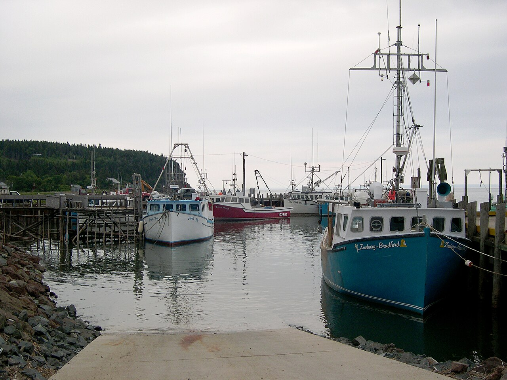
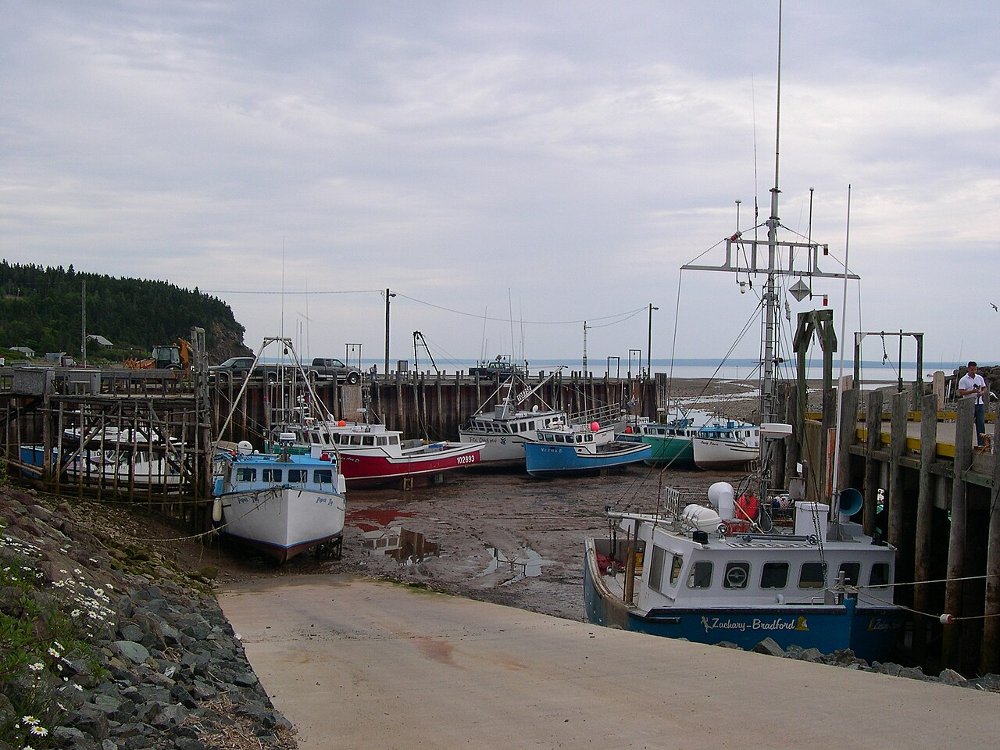
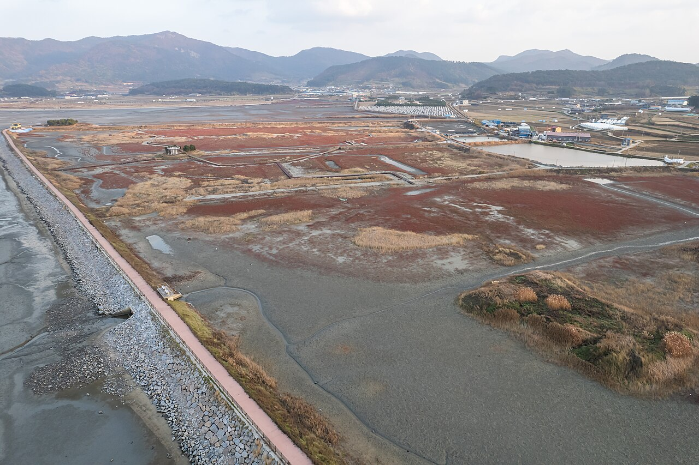

동기 유발
갯벌을 보러 가기 좋은 시간은?
교과서 p. 70학습 목표
- 조석의 발생 과정을 설명할 수 있다.
- 조석 자료를 해석하여 각 지역의 조석 양상을 설명할 수 있다.

Dylan Kereluk, CC BY 2.0

Dylan Kereluk, CC BY 2.0

문화재청, 공공누리 제1유형
우리나라 서해안·남해안의 갯벌은 세계 5대 갯벌 중 하나이다.
갯벌을 가장 잘 관찰할 수 있는 때는 언제일까?
갯벌을 가장 잘 관찰할 수 있는 때는 언제일까?
예시: 바닷물이 빠져 갯벌이 넓게 드러나는 간조(썰물) 때. 갯벌을 관찰할 수 있는 시간이 정해져 있다는 데서 '조석은 예측 가능한 주기 현상'임을 이끌어 냅니다. 교과서 운영안은 3차시(조석·기조력 / 조석 주기·사리와 조금 / 실시간 자료 탐구)입니다.
핵심 개념 1
조석과 기조력
교과서 p. 70 ~ 71(1) 조석의 용어
- 조석: 해안에서 해수면이 주기적으로 높아졌다 낮아지는 현상
- 만조(고조): 하루 중 해수면이 가장 높을 때 / 간조(저조): 가장 낮을 때
- 썰물: 만조 → 간조 사이의 흐름 / 밀물: 간조 → 만조 사이의 흐름 / 이런 해수의 흐름을 조류라고 한다.
- 조차: 만조와 간조의 해수면 높이 차 / 조석 주기: 만조에서 다음 만조(간조에서 다음 간조)까지의 시간
(2) 기조력: 인력과 원심력의 합력
- 기조력: 조석을 일으키는 힘. 지구가 지구와 달의 공통 질량 중심을 기준으로 원운동하면서 생긴 원심력과 달이 지구에 작용하는 인력의 합력이다.
- 달의 인력: 위치에 따라 크기와 방향이 다르며, 달에 가까울수록 크다.
- 원심력: 지구의 모든 지점에서 크기와 방향이 같고, 달에서 멀어지는 방향이다.
- 달에 가까운 쪽: 인력 > 원심력 → 기조력이 달 쪽으로 / 먼 쪽: 원심력 > 인력 → 기조력이 달 반대쪽으로
- 그래서 해수면은 달에 가장 가까운 쪽과 가장 먼 쪽 모두 높아진다. 이 상태로 지구가 자전하므로 하루 동안 만조와 간조가 반복된다.
- 태양도 기조력을 만들지만 훨씬 멀리 있어 크기는 달의 약 1/2이다.
시뮬레이션 1기조력은 어떻게 생길까?
인력과 원심력을 먼저 보고, 기조력을 켜서 두 힘을 더한 결과를 확인하자. 달 쪽과 반대쪽 모두 바깥으로 향하는 것에 주목하자.
핵심 개념 2
조석 주기와 조석 양상
교과서 p. 72왜 12시간이 아니라 12시간 25분일까?
- 지구는 달 쪽과 그 반대쪽 해수면이 높아진 상태로 자전하므로 밀물과 썰물이 번갈아 나타난다.
- 지구가 반 바퀴 자전하는 동안 달도 같은 방향으로 약 6.5° 공전한다. 그래서 다음 만조까지 지구가 약 6.5° 더 돌아야 하고, 여기에 약 25분이 걸린다. → 조석 주기 ≈ 12시간 25분
- 지구의 적도면은 달의 공전 궤도에 대해 기울어져 있어, 지역(위도)에 따라 만조·간조의 횟수와 높이가 달라진다.
- 하루 2번, 조차가 비슷 (주로 저위도)
- 하루 2번, 조차가 서로 다름 (주로 중위도)
- 하루 1번 (주로 고위도)
- 달의 타원 궤도에 따른 거리 변화, 그리고 지형과 해저 수심의 영향으로 실제 조석은 지역마다 매우 복잡하다. 위도가 비슷한 우리나라 동해안과 서해안도 조석 양상이 크게 다르다.
시뮬레이션 2지구 자전과 조석: 위도에 따라 달라지는 조석 양상
오른쪽 그래프는 평형 조석론으로 계산한 이틀 동안의 해수면 변화이다(지형 효과 제외). 위도와 달의 적위를 바꾸며 일주조·반일주조·혼합조가 나타나는 조건을 찾아보자.
핵심 개념 3
달의 위상에 따른 조석 변화
교과서 p. 73사리와 조금
- 한 달 넘게 조석을 관찰하면 약 15일 주기로 조차가 커졌다 작아지기를 반복한다. 이는 달의 위상 변화와 관련이 있다.
- 사리(대조): 달의 위상이 삭 또는 망일 때. 달과 태양의 기조력이 합쳐져 조차가 가장 크다.
- 조금(소조): 달의 위상이 상현 또는 하현일 때. 두 기조력이 직각 방향이라 서로 상쇄되어 조차가 가장 작다.
- 인천 앞바다의 한 달 조석 자료를 보면, 조석 주기가 12시간보다 조금 길고, 연속된 만조(간조)의 높이가 서로 다르며, 달의 위상에 따라 조차가 뚜렷하게 변한다.
시뮬레이션 3달의 위상과 조차: 사리와 조금
왼쪽: 북극 위에서 본 태양·지구·달과 두 기조력이 합쳐진 해수면 모양(과장). 오른쪽: 한 달 동안의 조차 변화. 사리와 조금이 한 달에 몇 번 나타나는지 세어 보자.
탐구 활동
실시간 자료를 이용한 조석 현상의 양상 추론하기
교과서 p. 74탐구 · 국립해양조사원 조석 자료 분석
목표 실시간 자료를 이용해 우리나라 연안의 조석 양상을 해석하고 추론할 수 있다. 준비물 스마트 기기
- 국립해양조사원 누리집(www.khoa.go.kr) → 해양정보 → 해양생활 → 실시간 고조 정보에서 원하는 지역의 조위 그래프를 보고 조석 주기를 기록한다.
- 스마트 조석 예보에서 그 지역의 한 달 조석 자료를 내려받아, 스프레드시트로 조석 변동 그래프를 그린다.
- 그래프에서 사리와 조금을 찾고, 그 시기의 달의 위상을 확인한다.
- 다른 지역을 골라 같은 방법으로 분석한다.
결과 및 정리
1. 오늘의 조석 주기로 내일의 만조·간조 시각을 예측해 보자. 2. 사리·조금 시기와 달의 위상의 관계는? 3. 지역마다 조석 양상이 다른 까닭은?
1. 예: 오늘 16시 19분이 만조이고 측정한 조석 주기가 약 12시간 8분이면, 내일 약 4시 27분에 만조, 그 사이 약 10시 30분 무렵 간조가 나타날 것이다.
2. 사리는 망·삭 무렵, 조금은 상현·하현 무렵에 나타난다.
3. 지역마다 조차, 만조·간조 시각, 사리·조금 시기가 다르다. 지형과 해저 수심 등 여러 요인이 조석에 영향을 주기 때문이다.
2. 사리는 망·삭 무렵, 조금은 상현·하현 무렵에 나타난다.
3. 지역마다 조차, 만조·간조 시각, 사리·조금 시기가 다르다. 지형과 해저 수심 등 여러 요인이 조석에 영향을 주기 때문이다.
스스로 확인하기
1. 기조력의 발생 원리를 설명해 보자.
기조력은 지구와 달의 공통 질량 중심을 기준으로 지구가 원운동하면서 생기는 원심력과, 달이 지구에 작용하는 인력의 합력이다.
2. 사리와 조금일 때 달의 위상은?
사리: 삭 또는 망 / 조금: 상현 또는 하현
3. 창의력 더하기 · 달이 지금보다 빨리 공전한다면 조석 주기는?
지구가 자전하는 동안 달이 같은 방향으로 공전하는 각도가 커지므로, 지구가 더 많이 돌아야 다음 만조가 된다. 따라서 조석 주기는 더 길어진다.
형성 평가
개념 확인 문제
그림 출처
사진은 Wikimedia Commons의 CC 라이선스 또는 공공누리 자료이며 그림 아래에 저작자와 라이선스를 표시했습니다. 시뮬레이션은 직접 만들었습니다.